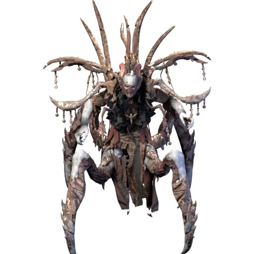

In this article 6 parts

Below Arreat
The Worldstone is destroyed. With Baal dead, a stair in the Worldstone Chamber leads down into Hell. Legacy of the Horadrim 0.1.0 follows that road beneath Arreat. It is the first public alpha of this offline mod for Diablo II: Resurrected and Reign of the Warlock.
We built it for anyone who has finished Hell and wants to keep playing alone, on a PC or on a Steam Deck with a controller. The campaign is the one you know. Its areas, monsters and drop rates are vanilla, but there is new loot to find along the way. Everything harder waits beyond Baal.
The Descent
The Descent runs fifty floors deep, in five bands of ten. Each band is built from the dungeons of one Evil's domain: the Cinders of Hatred, the Pits of Anguish, the Burrows of Pain, the Chasm of Terror and the Realm of Destruction. At the foot of each band, an Echo of that Evil waits in its own arena.
Sanctuary Stones
Sanctuary Stones drop in Hell, in fifteen tiers from I to XV, with three distinct maps in each tier. Cube a Stone with a gem in Harrogath and a red portal opens. The Stone sets the tier, and the gem picks which of its three maps you enter. Each of the 45 maps has its own lord, among them Haelric the Jailer in the Yards of Agony, King Fahir in his Menagerie and Osgar the Barrow-King in the Barrows.
The Vigil, Heaven and the Convergence
From tier V, the Stone maps hold Defiled Shrines, and our Sentinels guard them. Each of the four Sentinels carries its own quarter of a broken seal. Cube the four quarters in Harrogath to open the Crypt of the Vigil, where the Last Vigil waits. The highest tiers drop five Seals. Each opens the arena of an uber boss, and the five trophies won there open the Silver City and the Echo of the Veiled Prophet. The trophies of the Descent's five Echoes open the Black Abyss, where all five Unborn fight on one island at once. A Pentagram of Chaos and three Stones of Jordan open the Shade of Diablo's sanctuary.
What you bring back
New equipment starts to drop in Normal: 510 uniques, 32 sets and 191 runewords. The uniques are 367 items, 83 charms and 60 jewels, and some of the sets are two-piece sets for levelling. The endgame's chase items can beat the old best-in-slot, within limits. Each pinnacle drops its own. The Wordless drops from the Veiled Prophet, and The Black Seed and its kin drop from the Unborn. The Unborn's items grow as you feed them Remnants.
Horadric reagents remake what you find, so a good base is never wasted. Sentinel oils add the one stat you are missing. A Hellforge Ember corrupts an item, for better or for ruin. A bigger inventory and three new stash tabs hold the spoils, and your mercenary now wears rings, an amulet, a belt, gloves and boots. Akara sells the Token of Absolution for 100,000 gold, because trying a new build should not mean starting over.
A new way to scale. A new item stat, +# to Projectiles, lets projectile skills fire more. Fire Ball, Bone Spear, Miasma Bolt and eighteen other single-bolt skills fan out into a volley, and the volley's total damage rises 35% for each extra projectile. Multiple Shot, Strafe and the other many-missile skills fire one more missile per point, each at full damage. Two new runewords carry it: Hail for helms and Deluge for helms and gloves. We added it so a projectile build has a second way to grow, beyond raw damage.
We gave every class a second look and raised the weaker skills to stand beside the strong ones. Fury and Zeal both reach six hits, Bone Spear and Bone Spirit are cheaper to cast, and the Warlock's sigils reach further at level 25.
It is an alpha
This release is for finding what breaks. Expect bugs, crashes and balance changes between releases. The crash reporter that comes with the mod sends us what went wrong, and the known issues page lists what we are already fixing. The 0.1.0 patch notes, linked below, list every change with its old and new values. Install Legacy of the Horadrim to begin.
Upcoming update — patch notes will be linked when the release is available.